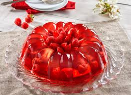

Ingredientes:
- 2 tazas de fresas, frambuesas y moras
- 1 taza de agua
- ½ taza de azúcar
- 1 sobre de gelatina sin sabor
- ½ taza de jugo de limón
- Hojas de menta para decorar
Preparación:
- Calienta el agua con el azúcar hasta que se disuelva.
- Hidrata la gelatina en ½ taza de agua y caliéntala hasta que se disuelva completamente.
- Mezcla la gelatina con el almíbar y el jugo de limón.
- Coloca las frutas en moldes y vierte la mezcla de gelatina encima.
- Refrigera por al menos 4 horas hasta que tome consistencia.
- Sirve frío y decora con hojas de menta antes de disfrutar. 🍓